Para administración de AgroServicios Morales: de la labor realizada a la factura del cliente, y de la factura a su pago.
La app ya sabe qué se hizo, en qué suerte, para qué cliente y a qué tarifa. Facturar es escoger el mes y el
cliente, revisar los avisos y tocar un botón. Cartera muestra lo que falta por cobrar, quién está en mora y
registra cada pago.
Los nombres, cifras y tarifas de las imágenes son de ejemplo.
Facturación
1La idea en un minuto
Cada labor que el operario cierra en el campo queda como una línea lista para facturar, con su cantidad y su valor. El camino es siempre el mismo:
Labor realizadala cierra el operario→Soporte del clienteorden de servicio, acta… (si el cliente lo pide)→Facturanúmero, fecha, valor y PDF→Carterapagos hasta quedar en cero
Nada se mueve ni se borra: una línea se queda en su lugar aunque le ponga precio, soporte o factura. La columna Estado dice si ya está Facturado o Sin facturar.
2Dónde está y quién la usa
Facturación: menú Más → 🧾 Facturación.
Cartera: menú Más → 💰 Cartera.
Las usan el propietario y administración (el analista también las tiene en su menú). Los operarios y supervisores no las ven.
La factura legal se sigue haciendo en Siigo. Aquí se registra su número, fecha, valor y PDF, y se ligan las labores que cobra.
3La pantalla de Facturación
De arriba hacia abajo:
Resumen en una línea: cuánto hay sin facturar y cuánto facturado (con su valor).
¿Qué vas a facturar? — el mes, la quincena y el cliente. Es lo primero que se escoge.
Herramientas (más pequeñas): buscar, Facturar por (la empresa que factura), los filtros Sin modalidad y Sin tarifa, y Excel (exporta lo que se ve).
La tabla: cada labor con su fecha, hacienda y suerte, labor y modalidad, operario y máquina, cantidad, Valor/ha (se puede escribir), Subtotal, Cliente, Soporte, Factura y Estado.
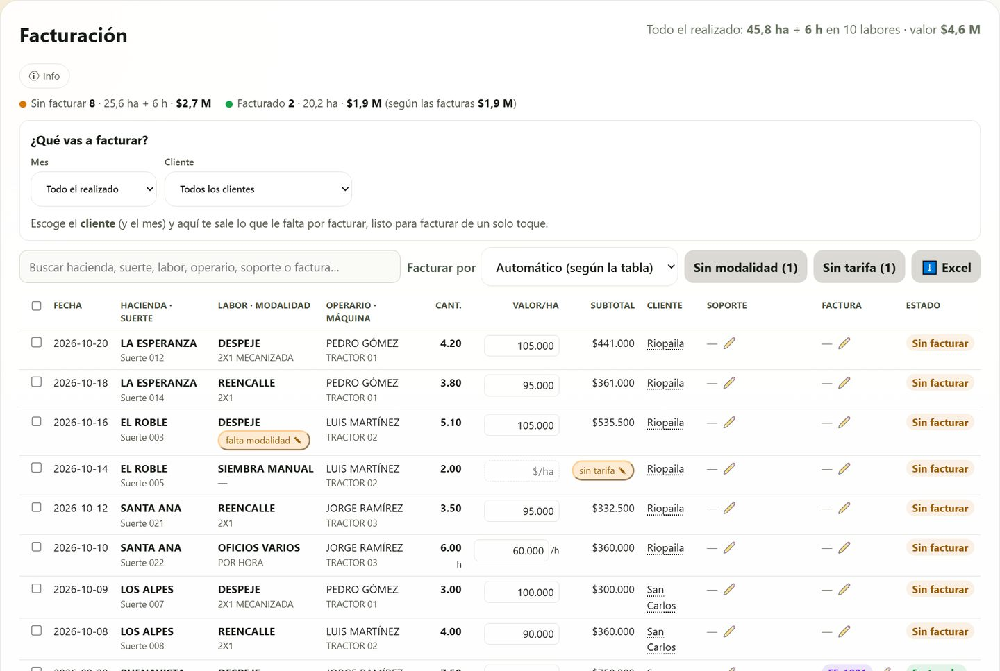
Así se ve al entrar: todavía sin cliente escogido.
4Facturar paso a paso
En ¿Qué vas a facturar? escoja el Mes (y la Quincena si factura por quincenas) y el Cliente. Junto a cada cliente sale cuántas líneas tiene.
Aparece lo que le falta por facturar: cuántas líneas, cuántas hectáreas y cuánto vale. Si sale algún aviso ⚠ sin precio o ⚠ sin modalidad, corríjalo primero (ver punto 5).
Toque 🧾 Facturar estas N líneas. Se marcan todas las pendientes de ese cliente y se abre la factura ya llena: cliente, empresa que factura y valor sumado.
Escriba el número de la factura (el de Siigo), revise la fecha, suba el PDF si lo tiene y toque Crear factura y vincular N líneas (o presione Enter).
Listo: las líneas quedan Facturado con su número, el panel dice «✓ Todo lo de … ya está facturado» y la factura queda en Cartera para cobrarla.
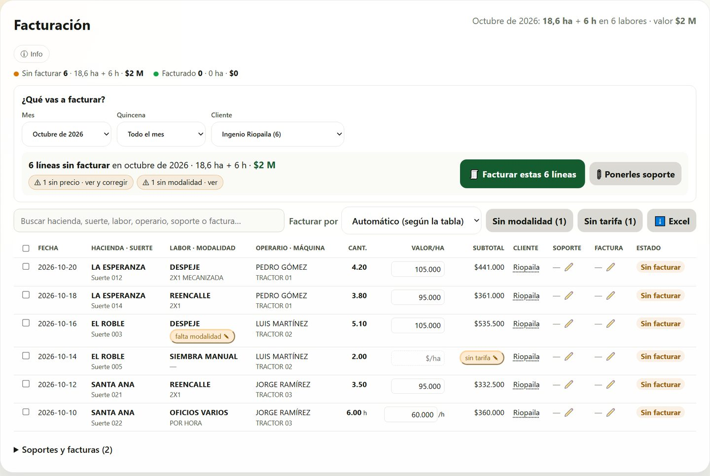
Octubre + Ingenio Riopaila: 6 líneas sin facturar por $2 M, con dos avisos para revisar y el botón Facturar estas 6 líneas.
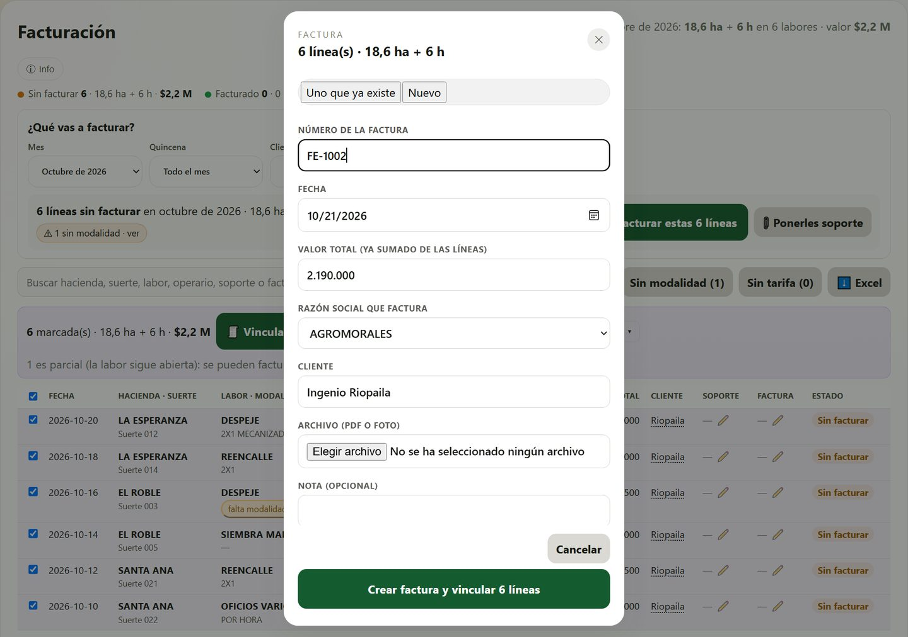
La factura nueva: solo hay que escribir el número. El valor ya viene sumado de las líneas.
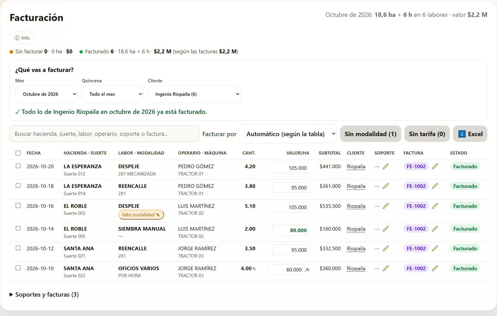
Hecho: las 6 líneas con la factura FE-1002, en su mismo lugar.
Más de 400 líneas: si escogió «Todo el realizado» y el cliente tiene muchas, la app le pide escoger el mes (o la quincena) para facturar por partes.
5Corregir antes de facturar
Los avisos del panel se tocan y dejan a la vista solo esas líneas. Mientras corrige, el botón grande sigue facturando todas las pendientes, no solo las que está viendo. Con Ver todas otra vez vuelve la lista completa.
«sin tarifa»: la tabla de tarifas no tiene precio para esa labor y ese cliente. Toque sin tarifa ✎: el cursor salta a la casilla Valor/ha; escriba el precio (por ejemplo 80.000) y presione Enter. Queda como precio manual (en verde) y el subtotal se calcula solo.
«falta modalidad»: la labor necesita modalidad (2X1, 4X1 quemada, 2 pases…) para saber su precio. Toque falta modalidad ✎: la línea se marca y se abre Más acciones con la modalidad; escójala y toque Poner modalidad.
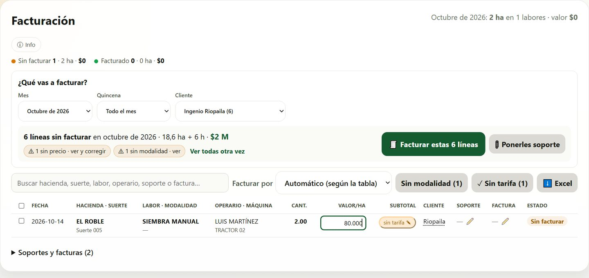
Revisando la línea «sin precio»: se escribe el precio en su casilla.
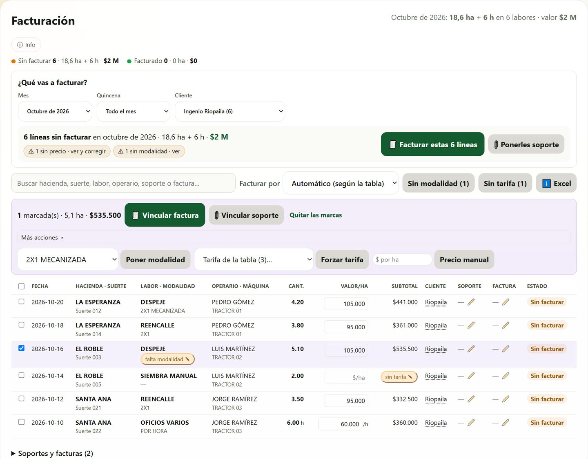
«falta modalidad ✎» marca la línea y abre dónde poner la modalidad.
Para volver a la tarifa: borre el número de la casilla Valor/ha y presione Enter. Esc deshace lo que estaba escribiendo.
6Cambiar una sola línea
Toque el cliente de la línea, o el ✏️ junto a su soporte o su factura. Se abre Facturación de la línea:
A quién se factura: «Automático» es el cliente del ingenio de la suerte. Si escoge otro, la tarifa cambia sola a la de ese cliente.
Soporte del cliente y Factura: escoja otro que ya exista, o «Sin soporte» / «Sin factura». Si todavía no existe, use + Crear … nueva para esta línea.
Si la línea sale de una factura, la app pide confirmación antes.
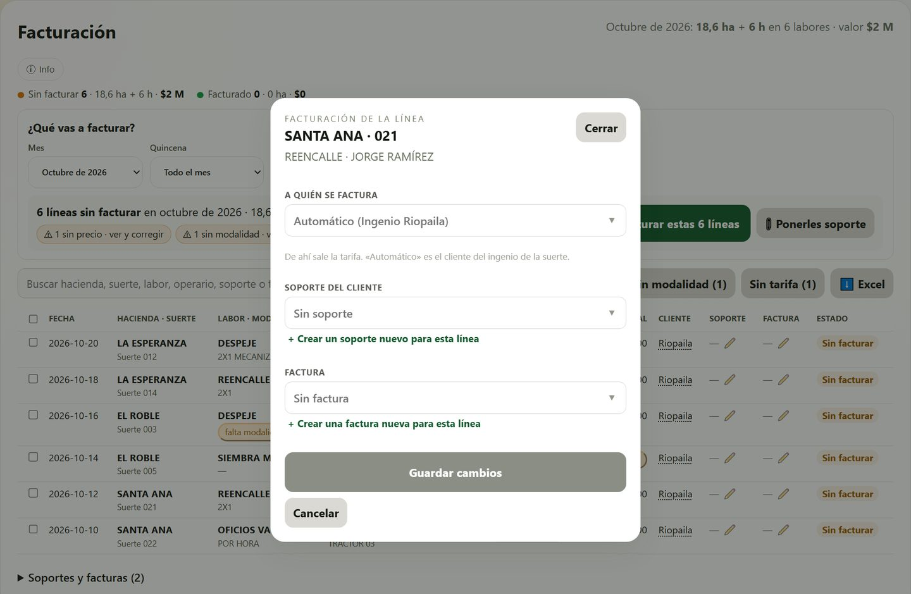
Corregir a quién se factura, su soporte o su factura, línea por línea.
Una línea ya facturada también se puede corregir. Cambiarle el precio o sacarla de su factura pide confirmación; si le cambia el cliente y no coincide con el de su factura, la app lo advierte. La factura no cambia de valor: solo la línea.
7Varias líneas a la vez
Marque las casillas de la izquierda (la de arriba las marca todas). Aparece una barra con lo marcado, sus hectáreas y su valor:
🧾 Vincular factura — a una factura nueva o a una que ya existe.
📎 Vincular soporte — el soporte del cliente (orden de servicio, acta, certificación…).
Quitar las marcas — desmarca todo.
Más acciones — quitar soporte o factura, poner la modalidad, forzar una tarifa de la tabla o poner un precio manual. La modalidad, la tarifa y el precio piden líneas de una sola labor.
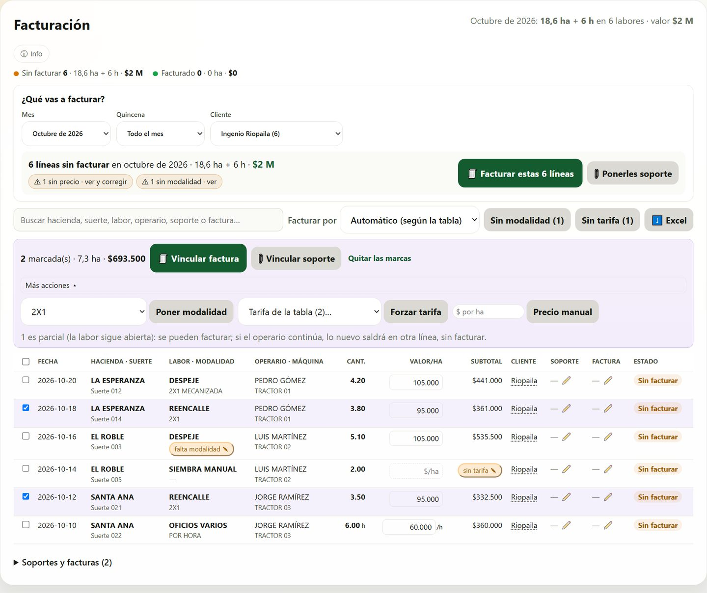
Dos reencalles marcados: la barra y, abierto, «Más acciones».
Labores parciales: una labor que sigue abierta (parcial) se puede facturar. Si el operario la continúa después, lo nuevo sale en otra línea, sin facturar: la facturada queda tal como se cobró.
Cartera
8Cartera: lo que falta por cobrar
Cada factura vence a los 30 días de su fecha (el plazo se puede cambiar). Después corren los días de mora. Las tarjetas de arriba cuentan cuántas hay en cada estado:
Estado
Qué quiere decir
Al día
Hasta 30 días desde la fecha de la factura.
Vencida
Pasó el plazo (31 a 60 días).
Crítica
Entre 61 y 180 días: hay que cobrarla ya.
Otras medidas
Más de 180 días.
Pagada
Los pagos cubren el valor (los días se congelan en el último pago).
Sin valor
La factura no tiene valor escrito: póngaselo en «Valor y plazo».
Arriba salen avisos: facturas en cartera crítica, cuotas vencidas de los acuerdos de pago y cuotas que vencen esta semana. Tocar un aviso de cuotas lleva a los acuerdos.
Dos pestañas: Facturas y 🤝 Acuerdos de pago (ver punto 10).
El filtro deja ver: Por cobrar, Todas, 🚨 Alertas de cobro (críticas o en mora), 🤝 Con acuerdo de pago o un estado.
Una factura con acuerdo muestra el 🤝 nombre del colono y vence según su plan: la fecha de la próxima cuota («cuota del acuerdo»). Si el colono va al día con sus cuotas, la factura está Al día aunque tenga más de 30 días.
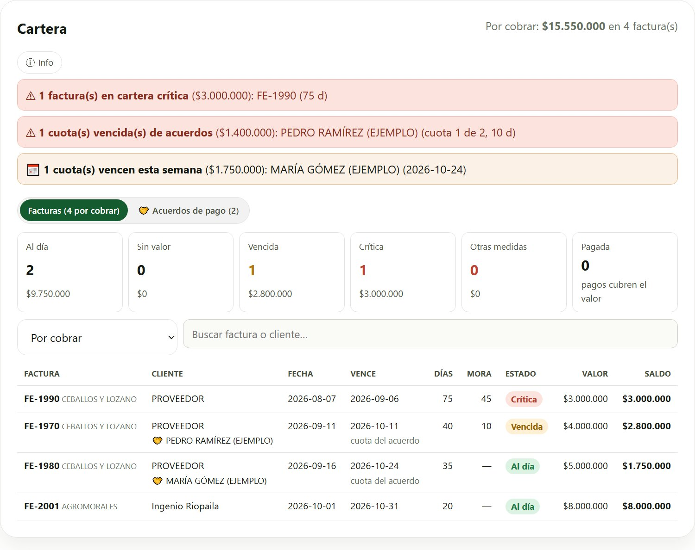
Cartera: $15.550.000 por cobrar. Arriba, la factura crítica, la cuota vencida de Pedro y la de María que vence esta semana.
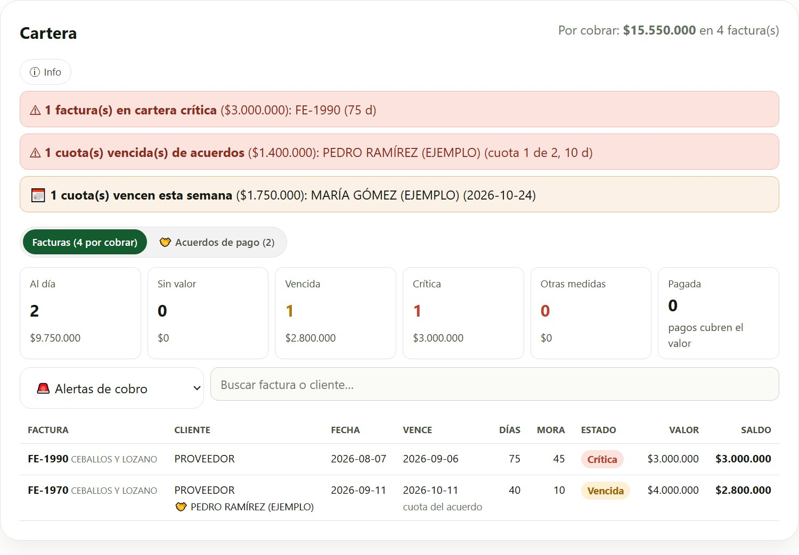
El filtro «🚨 Alertas de cobro»: lo que hay que llamar a cobrar (la de Pedro va por su acuerdo: su cuota venció hace 10 días).
9Registrar un pago
Toque la factura en la lista. Arriba ve su valor, lo pagado y el saldo, y debajo los pagos que ya tiene.
En Registrar pago: la fecha, el valor (o toque Todo el saldo para no escribirlo), el medio (transferencia, consignación, cheque, efectivo, cruce de cuentas) y la referencia. El comprobante es opcional.
Toque Registrar pago. Si paga por partes, registre cada abono: el saldo baja solo y, al llegar a cero, la factura queda Pagada.
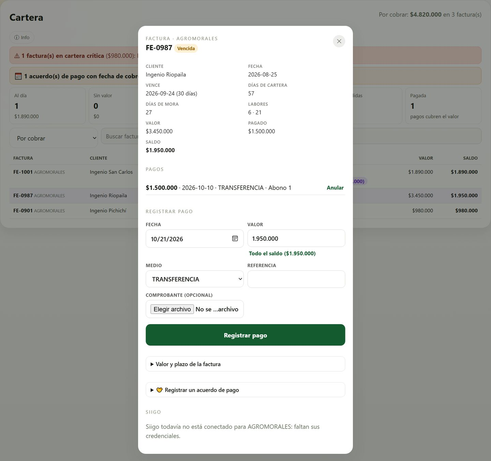
Factura vencida con un abono de $1.500.000: «Todo el saldo» pone los $1.950.000 que faltan.
Un pago no se borra: si se registró mal, toque Anular junto a él y escriba por qué. Queda a la vista como anulado y se registra otra vez bien.
10Acuerdos de pago con colonos (anticipo y cuotas)
Cuando un colono (proveedor) negocia con Cristian un plazo o un anticipo —por ejemplo, 30 % antes de empezar y el resto en 3 cuotas a 30, 60 y 90 días—, se registra aquí. El anticipo se descuenta de la factura final.
Registrar el acuerdo
En Cartera, toque la pestaña 🤝 Acuerdos de pago y luego ＋ Nuevo acuerdo.
Con quién: el nombre del colono, su teléfono (opcional) y sus haciendas (escriba o escoja cada una y toque Agregar). Las haciendas sirven para que, al facturar, la app reconozca sus labores. En Negoció ya dice Cristian.
Cuánto y cómo paga: el valor aproximado de la labor y el anticipo, en % o en pesos (uno llena el otro). Escoja cuántas cuotas, la fecha de la primera y cada cuánto.
La app arma sola el plan de pagos. Si se acordó distinto, cambie la fecha o el valor de cualquier cuota en la misma tabla. Toque Guardar acuerdo.
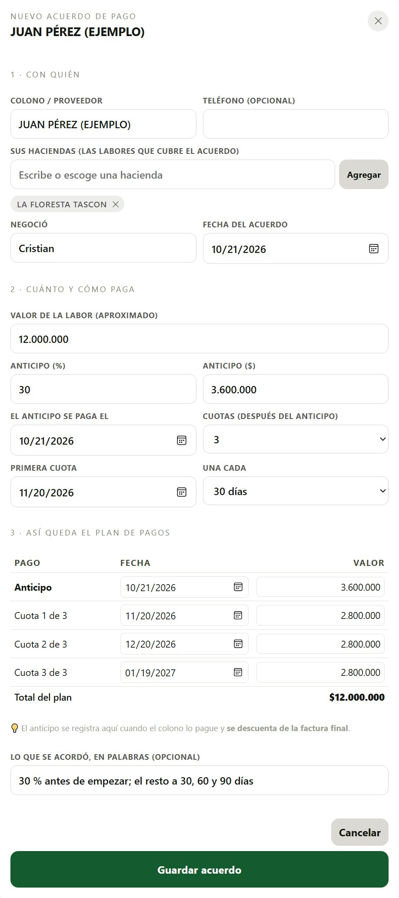
Juan Pérez: labor de $12.000.000, anticipo del 30 % ($3.600.000) y 3 cuotas de $2.800.000 a 30, 60 y 90 días.
La lista de acuerdos
Cada acuerdo muestra su plan, la próxima cuota con su estado, lo pagado, el saldo y su factura. Si el anticipo ya está pagado pero todavía no hay factura, dice sin factura · anticipo $…: ese dinero espera a la factura final.
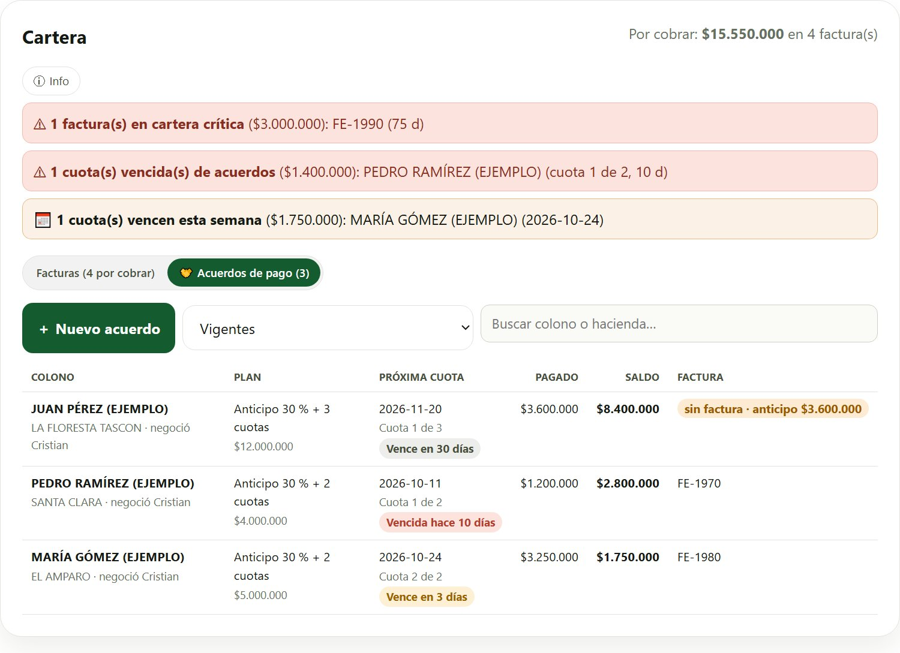
Tres acuerdos: Juan con el anticipo pagado y sin factura, Pedro con una cuota vencida y María con una cuota que vence en 3 días.
Registrar los pagos del colono
Toque el acuerdo. Verá el plan con cada cuota: Pagada ✓, Vence en N días o Vencida hace N días.
En Registrar pago toque el botón de la cuota (pone el valor solo), revise la fecha y el medio, y toque Registrar pago.
Lo pagado cubre las cuotas en orden: primero el anticipo, luego la cuota 1, la 2…
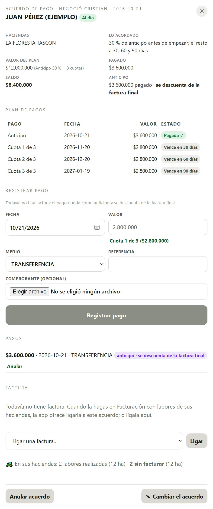
Anticipo pagado ($3.600.000): como todavía no hay factura, queda guardado y «se descuenta de la factura final».
La factura final: el anticipo se descuenta solo
Cuando facture en Facturación labores de las haciendas del colono, el formulario de la factura avisa: «Estas labores tienen acuerdo de pago con …», con la casilla marcada.
Deje la casilla marcada y cree la factura como siempre. La factura queda ligada al acuerdo y el anticipo ya pagado se le descuenta: su saldo baja de una vez.
En Facturación, las líneas de esas haciendas muestran 🤝 el nombre del colono, para reconocerlas.
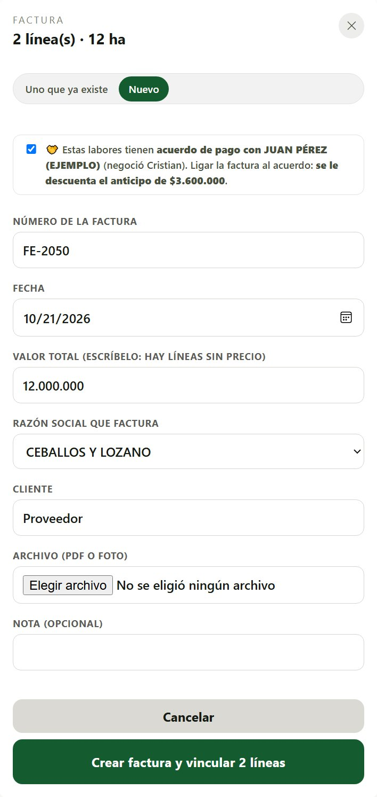
La factura FE-2050 de Juan: la casilla del acuerdo descuenta el anticipo de $3.600.000.
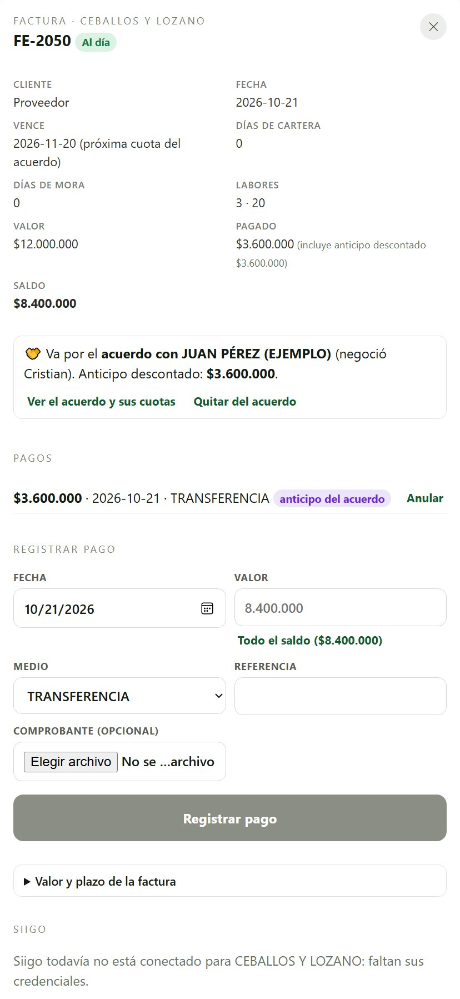
En Cartera: factura de $12.000.000, anticipo descontado $3.600.000, saldo $8.400.000. Vence con la próxima cuota (20 de noviembre).
Después de la factura, cada pago que registre en el acuerdo baja el saldo de la factura y cubre la cuota que sigue. También puede registrarlo en la factura: cuenta igual para las cuotas.
Si la factura ya existía, ábrala en Cartera y en 🤝 Acuerdo de pago escoja el acuerdo y toque Ligar. También puede ligarla desde el acuerdo.
Si se ligó por error, toque Quitar del acuerdo: el anticipo vuelve al acuerdo, a esperar la factura correcta.
Para un cliente que se compromete a pagar una factura en otra fecha, use el mismo camino: en la factura, ＋ Hacer un acuerdo de pago nuevo para esta factura, con una sola cuota.
Cambiar o anular:✎ Cambiar el acuerdo deja corregir el plan en cualquier momento (los pagos hechos se vuelven a repartir en orden). Un acuerdo con pagos no se anula: primero se anulan sus pagos, diciendo por qué.
Qué hacer si…
Si…
Haga esto
El colono pagó el anticipo y aún no hay factura
Regístrelo en su acuerdo (Cartera → 🤝 Acuerdos de pago). Se descuenta solo cuando la factura final se ligue al acuerdo.
Hice la factura y no salió el aviso del acuerdo
Las haciendas de las líneas no están en el acuerdo. Agréguelas con «✎ Cambiar el acuerdo», o ligue la factura en Cartera → la factura → 🤝 Acuerdo de pago.
Una línea dice «sin tarifa»
Toque «sin tarifa ✎» y escriba el precio en su casilla Valor/ha. Si debería tener precio en la tabla, revise Facturar por (la empresa) y la modalidad.
Me equivoqué de factura en una línea
Toque el ✏️ junto a la factura y escoja la correcta, o «Sin factura».
La línea es de otro cliente
Toque su cliente y escoja el correcto: la tarifa cambia sola.
El botón dice que son más de 400 líneas
Escoja el mes (o la quincena) y facture por partes.
Facturé una labor parcial y el operario siguió
Nada que hacer: lo nuevo sale en otra línea, sin facturar, para la próxima factura.
Registré mal un pago
Anúlelo diciendo por qué y regístrelo de nuevo.
Necesito la lista en Excel
Toque Excel: sale lo que está viendo (mes, cliente y filtros), con el estado de cada línea.
¿Se borra algo?
No. Las líneas no se mueven ni se borran; a una línea se le quita la factura o el soporte, y los pagos se anulan con motivo.
Todavía no hace: emitir la factura ante la DIAN (se hace en Siigo; aquí se registra) ni traer sola de Siigo cada factura mientras no estén conectadas sus credenciales.